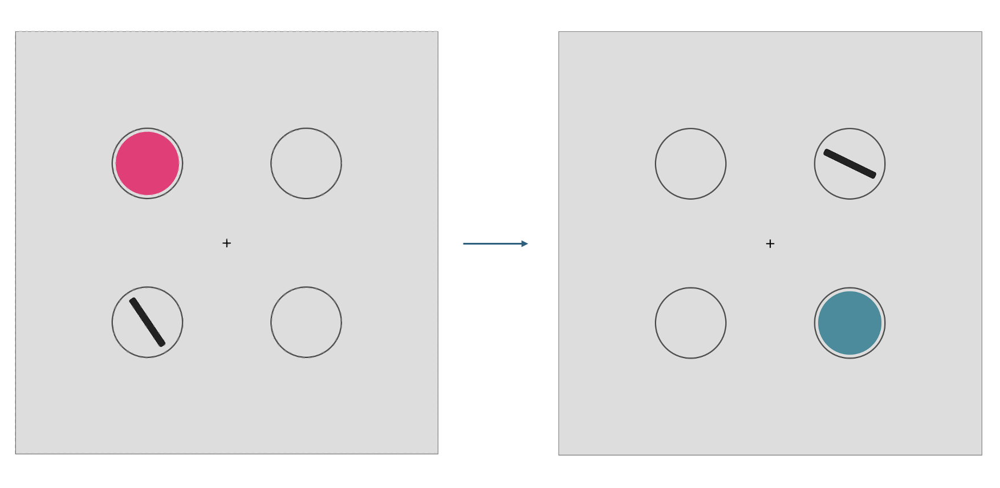
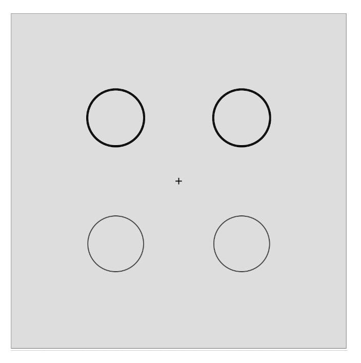
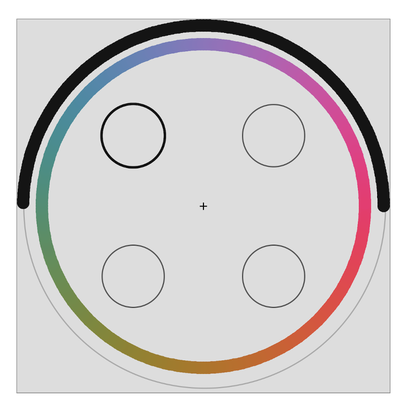
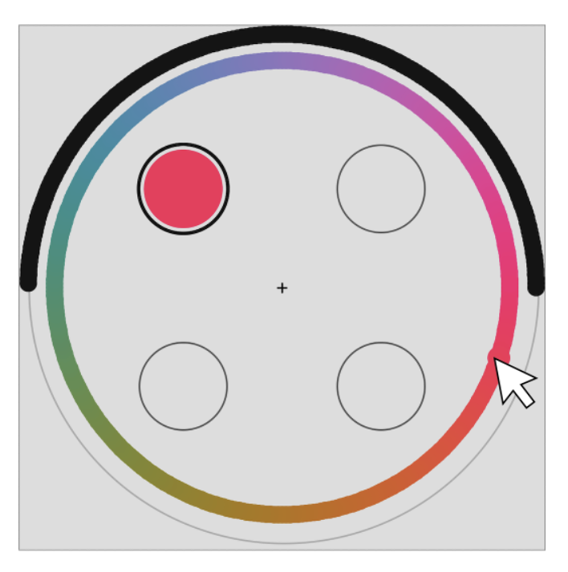

<!DOCTYPE html>
<html lang="en">
<head>
    <meta charset="UTF-8">
    <title>Retrocue Memory Experiment</title>

    <script src="https://ajax.googleapis.com/ajax/libs/jquery/1.10.2/jquery.min.js"></script>
    <script src="https://unpkg.com/jspsych@7.3.4"></script>
    <script src="jspsych_lib/mm_chunking.js"></script>
    <link href="jspsych_lib/jspsych.css" rel="stylesheet" type="text/css">
    <script src="https://unpkg.com/@jspsych-contrib/plugin-pipe"></script>
    <script src="https://unpkg.com/@jspsych/plugin-fullscreen@1.2.1"></script>
    <script src="https://unpkg.com/@jspsych/plugin-instructions@1.1.4"></script>
    <script src="https://unpkg.com/@jspsych/plugin-html-button-response@1.2.0"></script>
    <script src="https://unpkg.com/@jspsych/plugin-html-keyboard-response@1.2.0"></script>
    <script src="https://unpkg.com/@jspsych/plugin-survey-text@1.1.4"></script>
    <script src="https://unpkg.com/@jspsych/plugin-call-function@1.1.3"></script>

    <style>
        body { font-family: Georgia, serif; }
        #jspsych-content { background: #f4f4f4; }
        .consent-box {
            max-height: 300px; overflow-y: scroll;
            border: 1px solid #aaa; padding: 12px;
            font-size: 13px; text-align: left;
            background: #fff; margin: 12px 0;
        }
        .block-header {
            font-size: 18px; font-weight: bold;
            margin-bottom: 8px; color: #222;
        }
    </style>
</head>
<body></body>

<script>

/* Init jsPsych */
const jsPsych = initJsPsych({
    show_progress_bar: true,
    auto_update_progress_bar: false,
    on_finish: () => {
        // Redirect to SONA completion URL
        // Replace YOUR_SONA_CREDIT_TOKEN with your actual token
        const sona_url = `https://ucsd.sona-systems.com/webstudy_credit.aspx?experiment_id=3108&credit_token=3974845ab68c4a63a156799454da879b&survey_code=${raw_sona_id}`;
        window.location = sona_url;
    }
});

// Generate a truly random participant ID
const unique_participant_id = jsPsych.randomization.randomID(10);
const filename = `mm_chunking_v2_${unique_participant_id}.csv`;
jsPsych.data.addProperties({ unique_participant_id });

// Get the SONA id from url parameters
const url_params = new URLSearchParams(window.location.search);
const raw_sona_id = url_params.get('participant');
if (raw_sona_id){
    jsPsych.data.addProperties({ raw_sona_id });
}

const DEBUG = {
      enabled: false,
      max_blocks: 1 // do only first ${max_blocks} blocks
    };

DEBUG.enabled = false

// Initialize timeline
const timeline = [];


/* ======================================================================
   TRIAL GENERATION LOGIC
   Returns jsPsych timeline variables for a given block type.
   ====================================================================== */

/**
 * Build stim_types and retrocue_indices for each block type.
 *
 * Block type naming convention: <cue_structure>_<cue_features>
 *   cue_structure: within (cue both from same temporal set)
 *                  across (cue one from each temporal set)
 *   cue_features:  heterogenous (cued items differ in feature: color + orientation)
 *                  homogenous   (cued items share a feature: color + color, or orientation + orientation)
 *
 * Stimuli are always [color, orientation, color, orientation]
 * (items 0,1 = set 1; items 2,3 = set 2). See retrocuePairsByType below.
 *
 * probe_index: which of the two cued items is probed (0 or 1).
 */

function buildTrialVariables(blockType, nTrialsPerCell) {
    const vars = [];

    const [cueStructure, cueFeatures] = blockType.split('_');

    // Fixed layout: set 1 = items 0,1 ; set 2 = items 2,3
    const stimTypes = ['color', 'orientation', 'color', 'orientation'];

    //   within_heterogenous → [0,1] (c+o, set 1), [2,3] (c+o, set 2)
    //   across_heterogenous → [0,3] (c+o),        [1,2] (o+c)
    //   across_homogenous   → [0,2] (c+c),        [1,3] (o+o)
    // (within_homogenous is impossible: each set holds one color + one orientation)
    const retrocuePairsByType = {
        within_heterogenous: [ { rc: [0, 1] }, { rc: [2, 3] } ],
        across_heterogenous: [ { rc: [0, 3] }, { rc: [1, 2] } ],
        across_homogenous:   [ { rc: [0, 2] }, { rc: [1, 3] } ],
    };
    const retrocuePairs = retrocuePairsByType[`${cueStructure}_${cueFeatures}`];

    for (const pair of retrocuePairs) {
        for (const probeIdx of [0, 1]) {
            for (let t = 0; t < nTrialsPerCell; t++) {
                vars.push({
                    stim_types:       stimTypes,
                    retrocue_indices: pair.rc,
                    probe_index:      probeIdx,
                    block_type:       blockType,
                });
            }
        }
    }
    return vars;
}

const all_trial_types = [
    'within_heterogenous',
    'across_heterogenous',
    'across_homogenous'
];

// how many trials per cell do we want?
// Ratio target: within_heterogenous : across_heterogenous : across_homogenous = 1 : 1 : 1
// Each block type contributes n * 4 trials (2 retrocue pairs x 2 probe positions)
const nTrialsPerCell = 20;

// total = 8 trial types * 4 trials per type * nTrialsPerCell = 288 trials
const total_trials = all_trial_types.reduce(
    (sum, bt) => sum + nTrialsPerCell * 4, 0
);

const n_practice_trials = 16;

const allTrialVars = jsPsych.randomization.shuffle(
    all_trial_types.flatMap(bt => buildTrialVariables(bt, nTrialsPerCell))
);

// Split into blocks of 32, hence 288 / 32 = 9 blocks
let blocks = [];
const blockSize = 30;
if (total_trials % blockSize != 0){
    throw new Error("Your trial numbers are not divisible!");
}

for (let i = 0; i < allTrialVars.length; i += blockSize) {
    blocks.push(allTrialVars.slice(i, i + blockSize));
}

console.log(blocks.length)

if (DEBUG.enabled) {
    blocks = blocks.slice(0, DEBUG.max_blocks);
}

var trial_count = 0;
function update_progress_bar() {
    trial_count = trial_count + 1;
    jsPsych.setProgressBar(trial_count/total_trials);
}

timeline.push({
    type: jsPsychInstructions,
    pages: ['<p> Welcome to this experiment!</p><p><strong>In order to participate, you must be on a laptop or desktop computer.</strong></p>',
        '<p> In this experiment, you will be briefly remembering some colors and line orientations. </p><p> You will complete ' + total_trials + ' trials, each of which lasts around 8 seconds. These trials will be split across ' + blocks.length + ' blocks, and you can feel free to take breaks in between blocks. Not counting break time, the entire experiment should take about 40 minutes. </p><p> <strong> Please do not participate if you do not have normal color vision. <strong> </p>',
        '<p> Before each trial starts, you will see four placeholder circles. Shortly after, the two circles on the left will be filled by one colorful circle and one orientation bar. Then, these two items will dissapear, and two new items will appear on the cirlces on the right. <p><p> Your task is to remember the item that was shown in each location. If it was a circle, remember its color. If it was a line, remember its orientation. Please pay close attention throughout the entire trial, since the items will be presented very briefly. <p>',
        '<p> For example, you may see a trial like this. The two circles on the left are first filled. Then, after a delay, where everything dissapears, the two circles on the right are then filled by two other items. </p><p align="center"></p>',
        '<p> During the task, you may be tempted to remember the colors by repeating the name of that color to yourself. However, we are interested in your visual, not verbal, memory, so please avoid doing so. If you still find yourself from repeating the name of a color to yourself, we suggest you repeat the word "the" over and over again. This will help prevent you from using words to describe and remember the colors. </p>',
        '<p> After all of the four items are presented, there will be a "cue" period, where two of the four placeholder circles will have a darker border. Going forward, you will only need to continue remembering the items in those two circles, so you can essentially "drop" the items from the other two circles from your memory. To enhance your memory performance, please do your best to take advantage of this fact, as opposed to remembering all four items throughout the entire trial. </p>',
        '<p> Continuing our previous example, the top left and top right circles have been cued. This means we only need to remember the two items presented in these two circles </p><p align="center"></p>',
        '<p> These "cues" will then dissapear, and almost immediately after, one of the two placeholder circles that were just cued will be darkened again. Your task will be to report the color of the circle, or orientation of the bar, that was shown in that location. </p><p> This will be done through two reponse wheels that now appear. To report the shade of a color, you can hover over the corresponding color on the 360 degrees color wheel. Once you find the color that you believe matches the color that was presented in the darkened location, you can click on that color on the wheel to lock in your answer. Similarly, to report an orientation, you click on the corresponding orientation on the black orientation wheel (which is out of 180 degrees, since lines are symmetrical). </p><p align="center"></p>',
        '<p> To finish our previous example, let us say the top left circle was the one that you are asked to respond for. Then, you would drag your mouse to the region on the 360 degrees color wheel (since the item presented at the top left was a color) that corresponds to the shade the color was. Once you are satisfied, you can click on the color wheel to lock in your response. If you are supposed to report an orientation instead, you should do the same thing, except you would hover over and click on the black orientation wheel which is 180 degrees. </p><p align="center"></p><p> Very importantly, please indicate your response as quickly as possible. You do not need to strive for perfection, but rather, please click on the wheels once you are relatively satisfied with your answer. </p>'
    ],
    show_clickable_nav: true,
    button_label_next: 'Continue',
});

// Practice trials
timeline.push({
    type: jsPsychInstructions,
    pages: ['<p>First, you will complete some practice trials. Press "Practice" to continue.</p>',
    ],
    show_clickable_nav: true,
    button_label_next: 'Practice',
});

// Build practice trial variables
const practiceVars = jsPsych.randomization.shuffle(
    all_trial_types.flatMap(bt => buildTrialVariables(bt, 1))
).slice(0, n_practice_trials);

timeline.push({
    timeline: [{
        type:             jsPsychMMChunking,
        stim_types:       jsPsych.timelineVariable('stim_types'),
        retrocue_indices: jsPsych.timelineVariable('retrocue_indices'),
        probe_index:      jsPsych.timelineVariable('probe_index'),
        block_type:       jsPsych.timelineVariable('block_type'),
        is_practice:      true,
        feedback:         true,  // always show feedback during practice
    }],
    timeline_variables: practiceVars,
    randomize_order: false,
});

// Practice trials end
timeline.push({
    type: jsPsychInstructions,
    pages: ['<p>You have completed the practice. Press "Continue" to proceed to the main task.</p>',
    ],
    show_clickable_nav: true,
    button_label_next: 'Continue',
});

// Add each block with a break screen after (except the last)
blocks.forEach((blockVars, blockIndex) => {
    timeline.push({
        timeline: [{
            type:             jsPsychMMChunking,
            stim_types:       jsPsych.timelineVariable('stim_types'),
            retrocue_indices: jsPsych.timelineVariable('retrocue_indices'),
            probe_index:      jsPsych.timelineVariable('probe_index'),
            block_type:       jsPsych.timelineVariable('block_type'),
            is_practice:      false,
            feedback:         true,
            on_finish:        update_progress_bar,
        }],
        timeline_variables: blockVars,
        randomize_order: false, // it's false because we already randomized in buildTrialVars
    });

    if (blockIndex < blocks.length - 1) {
        timeline.push({
            type: jsPsychHtmlButtonResponse,
            stimulus: `<p>You've completed block ${blockIndex + 1} of ${blocks.length}.</p>
                       <p>Take a short break whenever you're ready.</p>`,
            choices: ['Continue'],
        });
    }
});


/* ============================
   END 
   ============================ */

timeline.push({
    type: jsPsychInstructions,
    pages: ['<p>Thank you for participating!</p><p>Press "Back to SONA" to be taken back to SONA</p><p><strong>You must do so in order to receive credit!</strong></p>'
    ],
    show_clickable_nav: true,
    button_label_next: 'Back to SONA',
});

timeline.push({
    type: jsPsychPipe,
    action: "save",
    experiment_id: "Hx6GxC7mZk8P",
    filename: filename,
    data_string: () => jsPsych.data.get().csv()
});

/* ---- Run ---- */
jsPsych.run(timeline);


</script>
</html>
